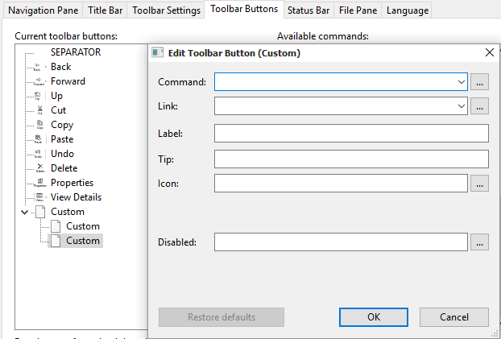

Gaurav wrote:
I don't understand the purpose of the features you are requesting:
- "Custom menu bar"
This will have to be implemented as a toolband. Did Microsoft make it possible for toolbands to be operated using the keyboard? I don't know. If keyboard operation is not possible, the "menu bar" you can have won't be a true menu bar, it can only be operated using the mouse, crippling 50% of the usability. It will be the same as the current Explorer toolbar, but only with text labels instead of icons. You can already do that using Classic Explorer Settings - configure the toolbar to work like a menu bar by disabling icons and using only text labels plus subitems. Plus, the "File menu" portion of a genuine menu bar cannot be implemented since registry/contextual verbs are not possible.
- "Custom address bar"
What is the purpose of this? What additional or missing functionality can this offer that the current Explorer address bar does not have?
"Images instead of icons"
- Again, why I don't understand? You can already put PNG images inside ICO files. So what's the functional purpose of this change?
Any features you want implemented should have some usability, productivity or value-added benefits - which enable users to do something that's not already possible in Windows Explorer. I don't see the point of hiding Windows Explorer UI elements that work without issues and and replacing them with custom additions that pretty much do the same thing.
I'll try to describe what features I'm asking for.
1. a) The answer to your question if the menu bar could ever be operated with hotkeys with the keyboard, is yes.
This was possible with windows 95 to windows 7. I'm not sure about windows 8, or windows 10.
b) Just having a custom menu bar would be good enough for me since the ribbon disabler doesn't work for me in windows 10. Sure, not being able to use hotkeys might be a drawback, but not a total setback. Being able to just use the mouse would be good enough.
c) "You can already do that using Classic Explorer Settings - configure the toolbar to work like a menu bar by disabling icons and using only text labels plus subitems"
This isn't a viable solution though. You should be able to have both the back, forward, up and etc buttons with the addition to the menu bar.
The menu bar should be on a separate toolbar from the navigation buttons.
I couldn't find the option to disable icons, and use text labels. I did however find how to make subitems. But does that make it so that you can't use navigation buttons still? I'd like to be able to have a custom menu bar with the addition to the regular navigation buttons.
Here's an image with subitems that I took:

d) "Plus, the "File menu" portion of a genuine menu bar cannot be implemented since registry/contextual verbs are not possible."
This, is very useful information, thank you. Does Ivo also agree with this statement? Replicating a menu bar, with custom items such as 'go' and 'favorites' is not possible because the registry/contexual verbs are not possible?
I would say myself that it is possible, since browsers such as k-meleon has file, open, and also edit, cut, copy paste. If it wasn't possible, then k-meleon wouldn't have a menu bar at all, correct? Another program with a menu bar would be firefox, and kompozer too. How did they add the menu bar with commands there? I'd say 'if it's made, there is always a way to create it.' Please correct me if I'm wrong.
Also, there are commands that already exist in classic shell that would help towards creating a menu bar.
An example of this is that under the menu bar in windows 98, you have the item named 'view'. Under this there are the options that let you view 'large icons' , 'small icons' , 'list' , and 'details'. Classic Shell currently has all of these options. There is also under the menu bar in windows 98 an item called 'edit' there you have the options 'cut' , 'copy' and 'paste'. Classic Shell has these options. I'd say that it'd be possible to have a menu bar with these options, as well as adding new ones too.
If there are no registry/contextual verbs possible, then how were these created within classic shell? I'm sure that this also applies to new ones as well that if the current ones were created, so can new ones as well.
Maybe I am missing something about what you meant about the registry/contextual verbs not being possible. Please fill me in if I am, thanks.
2. a) The current address bar has the back , forward and up buttons next to it. We don't need these if classic shell provides these buttons. They are just in the way and is an eyesore.
b) The address bar currently cannot be moved below the classic shell explorer toolbar.
The address bar used to be always below the buttons in the explorer windows in windows 95 to windows xp.
This would provide more of a classic explorer feel. This is one of those things that you could say 'don't fix what isn't broken' and microsoft broke it. So this would be an amazing addition to classic shell.
c) They do the same thing, yes. But that's not the point, what is though is that it'd be nice to have the address bar below the classic shell buttons like they were in windows 95 to windows xp.
3. a) I recently found out that .ico's actually support custom resolutions such as 90 x 10 px, without having to use a square background such as 16 x 16, 32x32, and 256 x 256. I asked the forum sevenforums, and they said there that only square sizes were supported, however on another forum I found proof that custom resolutions were possible.
b) I'm pretty sure that classic shell doesn't support .ico's on the toolbar to be different sizes. Such as a 32 x 32 px icon, and a 64 x 64 px icon on the same toolbar.
This is where images would come in handy, since it would allow this behavior.
c) If the icons were all the same size, yet the images were not, say the icons were all 64 x 64 px, and some of them would be 50 x 50 px inside the icon, and some of them were 24 x 24 px inside the icon, wouldn't you have unnessessary transparent space around the images, when you only wanted exactly 50 x 50 px, and 24 x 24 px? Images would allow you to have the exact dimensions that you'd like, without any transparent border, and would support different sized images on the same toolbar.
d) Support for animated .gif's, animated .png, and a .bmp film strip such as with the start button which can be animated by scrolling through the stacked images. Images would be useful for this as well.
.ico's just can't do this as far as I know.
What I'm proposing has its usability, productivity & value-added benefits for the user too. Which isn't possible currently with classic shell. My idea is towards the users favor, total & full customization with the classic shell explorer would be an added benefit to the classic shell experience which would benefit many.
Anything else, just ask & I'll try to answer as best I can. Thanks.


{kind=link}